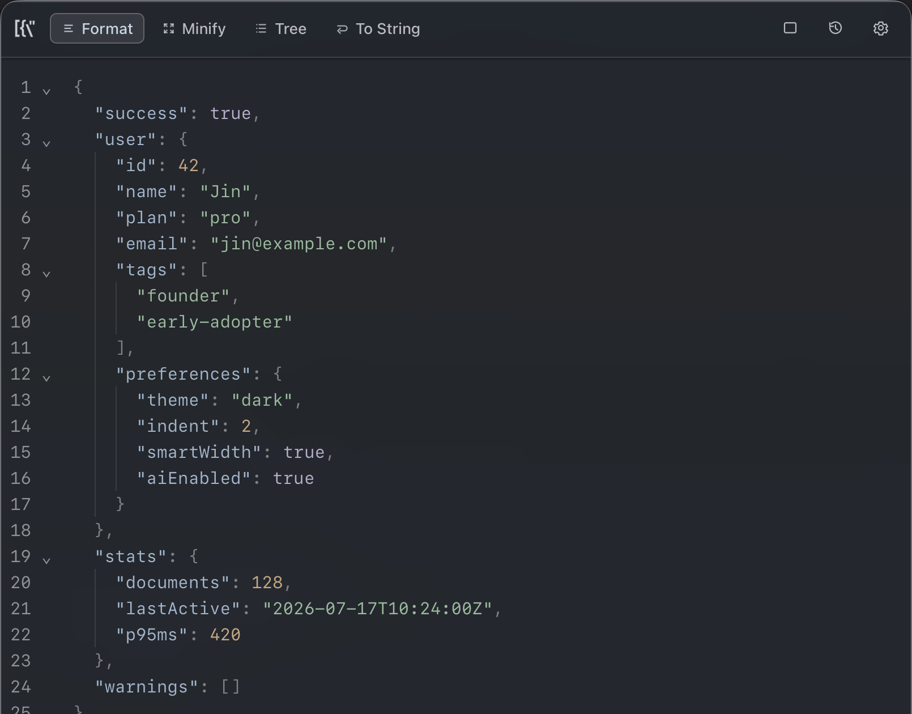
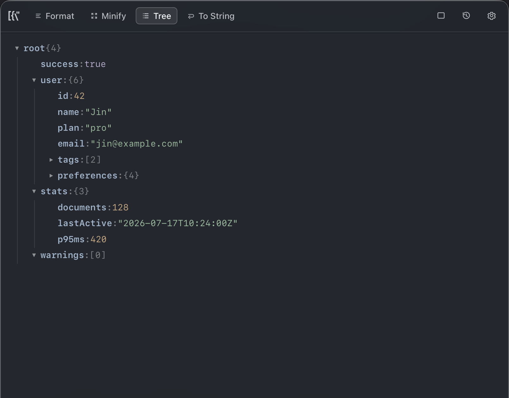

A tiny macOS & Windows utility that lives in your menu bar — format, minify, traverse, unwrap nested strings, and AI-fix invalid JSON without ever leaving your keyboard.

No editors, no browser tabs, no CLI detours. Jsonita handles the boring transforms and gets out of the way.
Indent 2 / 4 / tab, sort keys, trailing newline — configurable. Long lines auto-widen the panel so you actually read what you pasted.
Collapse arrays, spot types at a glance. Paste the Go/Python/Java proto double-wrap and Jsonita unwraps every layer in one shot — with a 60 s hard timeout so it can never hang you.

Pasted something almost-JSON from a log or a Slack snippet? Jsonita shows the AI Fix tab — you click, it shows a diff, and you Accept. Nothing leaves your machine without you pressing that button.
Everything lives on your machine: history, settings, window state, and your API key. AI only fires when you click AI Fix — and only sends the document you are looking at.
secrets.json with restricted permissions (no Keychain)v1.0 beta · macOS primary, Windows beta. Signed macOS builds and Homebrew land in v1.1.
.dmg from GitHub Releases./Applications..exe installer from GitHub Releases.
Or build from source: git clone https://github.com/jinhuang712/jsonita && cd jsonita && pnpm install && pnpm tauri dev